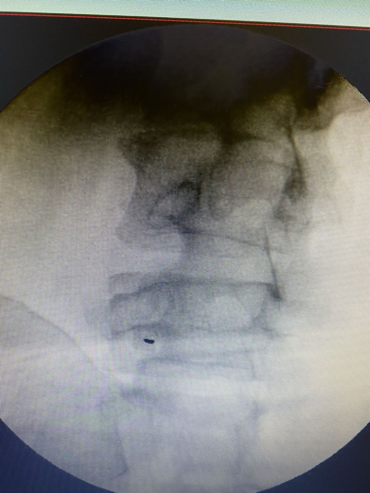
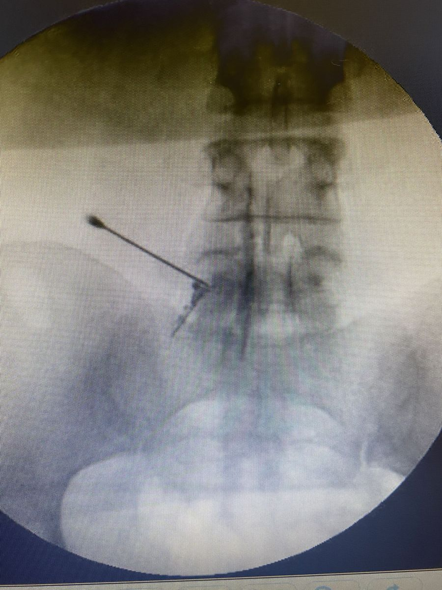
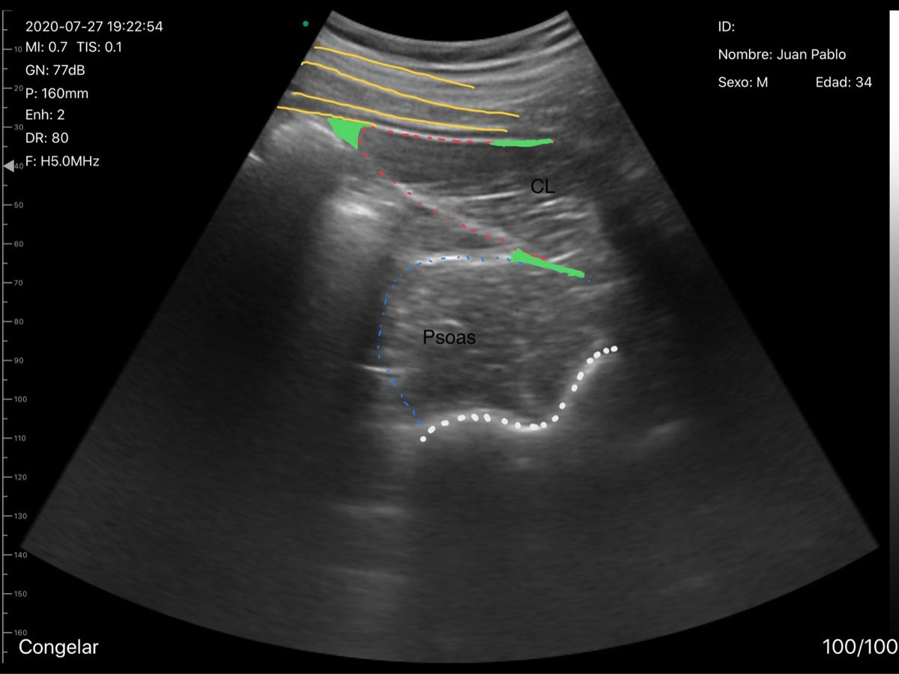
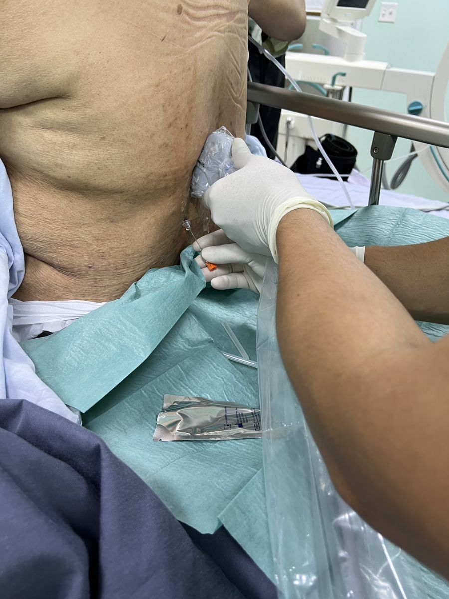

Los bloqueos nerviosos son procedimientos mínimamente invasivos
que alivian el dolor inyectando anestésicos locales y/o antiinflamatorios cerca de
un nervio o articulación. Para lograr mayor seguridad y precisión usamos
ultrasonido y/o fluoroscopia (rayos X en tiempo real),
lo que permite colocar la medicación exactamente donde se necesita.
¿Cuándo se indican?
Dolor de cuello, espalda o extremidades por artrosis, hernias o sobrecarga.
Neuralgias (dolor por irritación de un nervio).
Dolor posterior a cirugías o lesiones.
Como prueba diagnóstica para confirmar el origen del dolor.
Beneficios
Alta precisión gracias a la guía por imágenes.
Procedimiento ambulatorio con recuperación rápida.
Puede disminuir la necesidad de analgésicos orales.
¿Cómo se realiza?
Te colocamos en una posición cómoda, limpiamos la piel y aplicamos anestesia local.
Luego, guiados por ultrasonido o fluoroscopia, posicionamos una aguja fina y
administramos el medicamento. Tras unos minutos de observación puedes regresar a casa
con indicaciones claras.

Fluoroscopia: rayos X en tiempo real para ver la anatomía de la columna y planificar el punto exacto de tratamiento.

Posición precisa de la aguja bajo fluoroscopia. Esto aumenta la eficacia y ayuda a reducir riesgos.

Ultrasonido: permite ver tejidos blandos (músculos, vasos, trayecto del nervio) y dirigir la medicación sin radiación.

Procedimiento ambulatorio con medidas estrictas de asepsia y monitoreo.
*La indicación del procedimiento es individual y se decide tras valoración médica.*